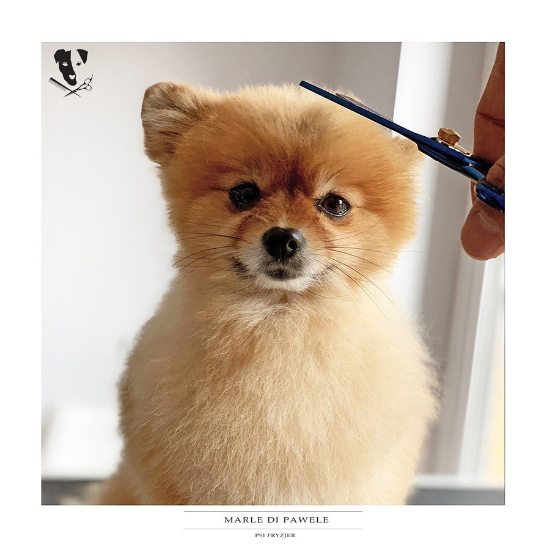

Sierść to pierwsza rzecz w wyglądzie psa, która zwraca naszą uwagę. Nie tyle umaszczenie, co właśnie czyste, lśniące i zdrowe futro. Kondycja sierści mówi wiele o stanie zdrowia zwierzęcia, a
także pełni ważne funkcje dla całego organizmu.
CENA: 50zł
WYCZESYWANIE PSA/KOTA
Marle Di Pawele
WYCZESYWANIE PSA / KOTA
Marle Di Pawele
Czesanie kota pomaga nie tylko zmniejszyć ilość wszechobecnych włosów, ale także przyczynia się do poprawy kondycji sierści. Kiedy pozbywasz się obumarłych włosów, na ich miejsce wyrastają nowe.
CENA: 30ZŁ

STYLIZACJE PSICH FRYZUR
Marle Di Pawele
STYLIZACJE PSICH FRYZUR
Marle Di Pawele
Kiedy pojawiały się pierwsze salony dla psów, zazwyczaj oferowały mały wachlarz możliwych fryzur. Jak z morza pomysłów wybrać odpowiedni dla naszego pupila?